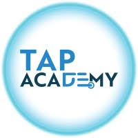

Home
Courses
Student Reviews
Hire From Us
Contact Us
Student Reviews
Tap Academy Students Review
Our complete online training has made students learn
to code anytime anywhere & got placed in various
Companies. Here are our few students placed at
various companies

Gowtham GM
A warm thanks to the Tap Academy team.
I am Gowtham GM from Tamilnadu, a 2024 passed-out student. I joined Tap Academy as a CSR student in the month of February. My journey with Tap Academy is quite different. The trainers at Tap Academy are skilled and experienced. They teach a lot of new concepts and help in learning programming languages from scratch.
I am from the Computer Science branch, but the teaching at Tap Academy is structured in a way that makes it easy for students from all domains to understand the concepts and technology taught by the trainers.
Finally, I got placed as a Software Engineer at Revature with a package of 3.25 LPA. The placement team helped me a lot in securing this job.
Thank you to the entire Tap Academy team for helping me acquire this opportunity.

Gagan GR
After joining Tap Academy, I have improved my programming skills, and my knowledge of core Java has also improved. Now, I am learning the Collection Framework, MySQL, HTML, and CSS in parallel.
Through the TAI platform, I have enhanced my problem-solving skills. Additionally, the LMS makes it easy to watch all the recorded videos. They also provide recorded videos of frameworks like J2EE, Spring, Data Structures, etc.
I got placed in Promantia Business Solutions for the role of Associate Technical Consultant with a package of 3 LPA.
Thank you TAP ACADEMY for giving me this opportunity.

Aman Kumar
I got placed in Ribbon communication in CyberSecurity role with 8 LPA package.
Enrolling at TAP Academy Institute has been one of the best decisions for my educational and professional growth. The institute offers a holistic learning environment that caters to various aspects of my development as a student and aspiring professional.
The teachers at TAP Academy are incredibly knowledgeable and always willing to help. Their dedication to student success is evident in the personalized attention they provide. Whenever I faced challenges, I knew I could rely on my instructors to offer guidance and support, making the learning process smoother and more enjoyable.
One of the standout features of TAP Academy is the TAI platform, dedicated to coding practice. This platform has been instrumental in enhancing my programming skills. LMS at TAP Academy is another great asset. It centralizes all learning materials, assignments, and progress tracking in one place. The dedicated job portal connects students with potential employers, offering a direct pathway to internships and job placements. Through this portal, I have had the opportunity to apply my skills in a professional setting, which has been crucial for my career development.

Varshaa M
I'm a student from the Feb 2 batch, and I'm happy to share my experience with Tap Academy.
They visited our college in Tamil Nadu and selected students for their CSR batch, offering a
free course that's been incredibly helpful. Compared to other academies, Tap Academy stands out
for its excellent trainers, who explain complex concepts in a clear and concise manner, start from
scratch, making it easy for beginners to understand, and provide in-depth coverage of programming and
OOPS concepts, highly valuable for placement opportunities. I'm grateful to have been selected by Avasoft
with the role of Trainee Engineer with a package of 5 LPA through college placement, and I attribute my success
to Tap Academy's incredible teaching, as I used the same approach they taught me during them mock interview process.
Additionally, Tap Academy offers comprehensive notebooks and study materials, an LMS platform with daily class recordings,
a TAl platform for practicing daily programming questions, weekly assessments, and monthly mock assessments and Interviews,
boosting placement confidence, as well as soft skill classes focusing on logical thinking.